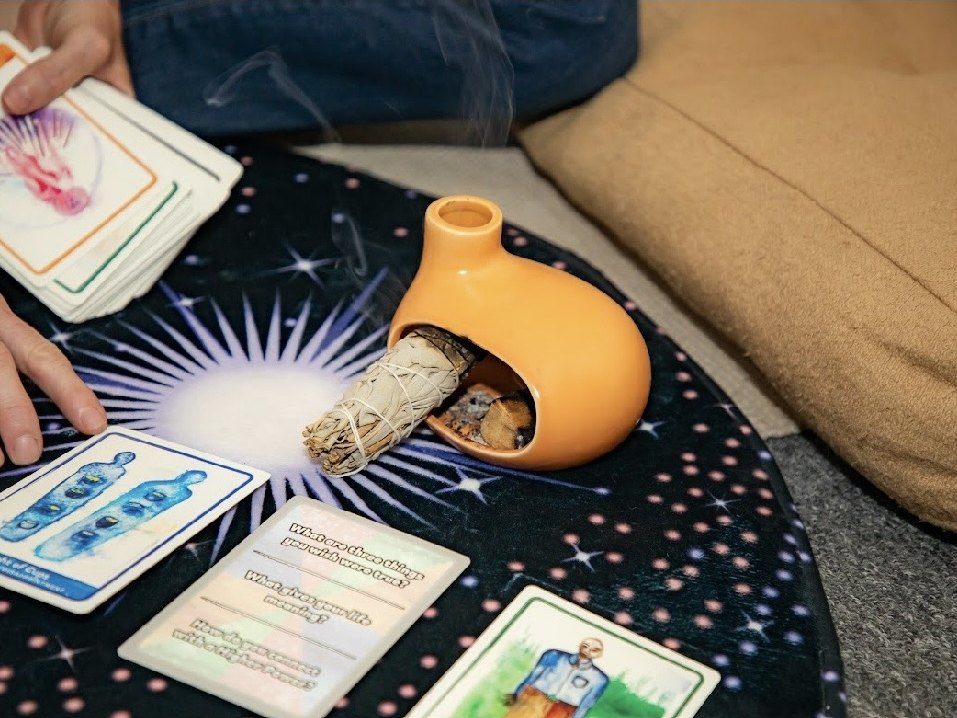

Root Chakra
Base of spine
Safety, security, grounding. When blocked: anxiety, fear, feeling unrooted or unsafe in your body.
Chakra Healing · Mesa, AZ
Energy work that's grounded, accessible, organized, simple, and held by someone who's done the clinical work too.
We are so much more than this physical body. We now have research to prove we are energy, and that we have an "energetic body." The simplest way to start understanding this is that emotions are energy. They are sensations that happen in the body, and that energy needs to move. Sometimes we don't let it. So we store it, and it gets stuck.
You feel it as tension in the chest you can't trace. Fatigue that doesn't respond to sleep. Tightness in the throat when you try to speak up. Heaviness in the gut. Numbness in places that used to be alive. Talk therapy can do a lot, but it can't always reach the places where energy is stuck.
That's why I work specifically with chakras. In an organized, somatic, ancient, sacred way.
The chakras are seven energy centers running along the spine, each one connected to a different aspect of physical, emotional, and spiritual experience. Stuck energy is stuck emotional experience. Emotions that were triggered by something you didn't allow yourself to feel in a conscious or healthy way. You stored it. Saved it. And now it shows up as tension, unhealthy emotional patterns, or a sense of being "stuck" you can't otherwise explain.
Chakra healing brings awareness, breath, sound, movement, and intention to each of these centers. We can also use tuning forks. Each center responds to a different frequency, since each emotion carries a different energy. Sadness feels heavy. Excitement feels bubbly. We use these differences to heal the different centers. Gently noticing what's there, releasing what's ready to move, and inviting more flow. You don't need to believe anything specific for it to work. You just need to show up curious.
You don't need to know any of this before coming in. It helps to see the map.
Base of spine
Safety, security, grounding. When blocked: anxiety, fear, feeling unrooted or unsafe in your body.
Lower abdomen
Creativity, pleasure, emotional flow. When blocked: numbness, guilt around pleasure, feeling creatively stuck or emotionally flat.
Upper abdomen
Sense of self, personal power, motivation. When blocked: people-pleasing, chronic self-doubt, stomach tension.
Center of chest
Love, connection, compassion. When blocked: walls up, difficulty trusting, grief that lingers, tightness in the chest.
Throat
Communication, self-expression, truth. When blocked: swallowing words, fear of speaking up, a tightness in the throat.
Between the brows
Intuition, clarity, inner knowing. When blocked: overthinking, disconnection from your gut, foggy-headedness.
Top of the head
Spiritual connection, meaning, presence. When blocked: disconnected from purpose, spiritual emptiness, going through the motions.
Tuning forks are one of the tools we work with. Each chakra responds to a different frequency, since each emotion carries a different energy. Sadness feels heavy and low. Excitement feels bubbly and high. We use those differences to meet each center where it is, and to help energy move the way it was meant to.

Energy work doesn't have to be abstract or mystical. In this space, it's practical, embodied, and held by someone who understands both the clinical and the energetic layers. You bring the curiosity. The rest unfolds from there.
Length
A 50-minute full session, or a 30-minute add-on to your individual therapy session. In person at our Mesa office or virtual. We learn the system, figure out where you're stuck, and use movement, breath, and sound to help energy move the way it was meant to.
How it feels
Most people leave feeling lighter, more grounded, and more connected to themselves. Some have insights. Some just feel quiet for the first time in a long time.
Pairs with
Chakra healing is wellness work, not therapy. Many clients pair it with individual therapy for the deepest layers of healing. We can also do this work with the help of Ketamine for a sacred, powerful, energetic experience.
Comfortable clothes. An open mind. That's it. Some clients like to bring a journal for after the session, but it's not required. You don't need any prior experience with energy work, meditation, or movement. You don't even need to know what a chakra is before you walk in. I'll meet you wherever you are.
People looking for a complement to their existing therapy or coaching.
Chakra healing is wellness work, not therapy. It doesn't diagnose or treat mental health conditions. If you're working through clinically significant concerns, therapy is the right primary container.
Seven energy centers running along the spine, each connected to a different aspect of physical, emotional, and spiritual experience. They are a model. A useful map for working with the subtle layer of how we hold experience in the body.
No. Just because we don't believe doesn't mean it's not true, or vice versa. We often struggle with beliefs that need healing. Think about how many of us are walking around believing we're not good enough, or that there's something wrong with us. People who come in skeptical and curious often have powerful experiences. You don't have to believe anything. You just have to show up.
That depends on what you're working with. Some people come for a single session to clear something specific. Others come in for a series. Ideally we want the energy flowing through all the centers so you can experience the fullness of your energy and live a life of abundance.
Yes. Many clients do. Some pair chakra work with therapy I'm providing; others pair it with another therapist's work. Either is fine.
I came in feeling stuck everywhere. My throat, my chest, my gut. I didn't know how to describe it to a therapist. Alicia didn't need me to explain it. She just worked with what was there. I left feeling lighter than I have in years.

The clinical side. Pair chakra work with trauma-informed therapy for the deepest layers of healing.
Learn more
Sacred sexuality, embodiment, and the deeper kind of intimacy. A natural complement to energy work.
Learn more
Community healing experiences. Somatic movement, sound healing, and the power of doing this work alongside others.
Learn moreReach out for a free consultation. We'll talk about what you're noticing, and whether working specifically, intentionally, focused on chakra healing feels right.